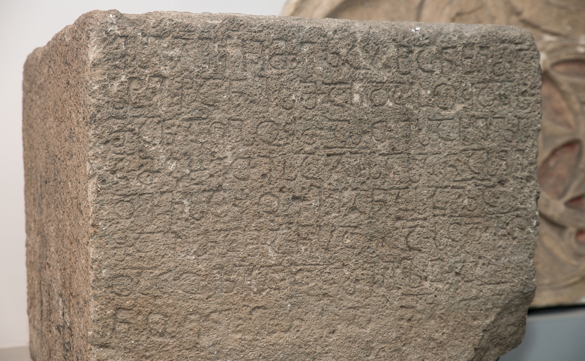

წყისეს წარწერაTskise inscription
წყისეს წარწერა
Tskise inscription
შინაარსი / Summary
მოსახსენებელი Memorial
ბიბლიოგრაფია Bibliography
კრიტიკული გამოცემა Interpretive Edition
ესე ჯ(უარ)ი ქ(რისტ)ჱ(ს)ი მე კოსტანტი ძ(ემა)ნ
სტეფანესმან და გუდას -
მან აღჰუმართე სახელს -
ა მცხეთისა ჯ(უარ)ისასა ნასყი -
5დევსა ქუეყანასა ზ(ედ)ა
შაჰრამანსა ა ს(ალო)ც(ველა)დ ჩ(უე)ნ -
და ცოლისა და შვილთა
ნოენბერსა იზ ამ(ე)ნ
დიპლომატიური გამოცემა Diplomatic Edition
ႤႱႤ ႿႨ ႵჁႨ ႫႤ ႩႭႱႲႠႬႲႨ ႻႬ
ႱႲႤႴႠႬႤႱႫႠႬ ႣႠ ႢႳႣႠႱ
ႫႠႬ ႠႶჀႳႫႠႰႧႤ ႱႠႾႤႪႱ
Ⴀ ႫႺႾႤႧႨႱႠ ႿႨႱႠႱႠ ႬႠႱႷႨ
5ႣႤႥႱႠ ႵႳႤႷႠႬႠႱႠ ႦႠ
ႸႠჀႰႠႫႠႬႱႠ Ⴀ ႱႺႣ ႹႬ
ႣႠ ႺႭႪႨႱႠ ႣႠ ႸႥႨႪႧႠ
ႬႭႤႬႡႤႰႱႠ ႨႦ ႠႫႬ

Tskise Inscription
{'ka': 'ეს ქრისტეს ჯვარი მე, კოსტანტიმ, სტეფანეს და გუდას ძემ, აღვმართე მცხეთის ჯვრის სახელზე ნაყიდ მიწაზე,\n შაჰრამანის პირველში, ჩვენ დასაცავად - ცოლისა და შვილებისა, ნოემბრის ჩვიდმეტს, ამენ.', 'en': 'I, Constant, the son of Stefane and Guda, erected this Cross of Christ, in the land purchased for the Holy Cross of Mtskheta შაჰრამანის პირველში\n (the first of Shahraman) for the protection of ourselves and our wives and offspring, we bought it on November 17, Amen.'}
{'ka': 'ნოდარ შოშიაშვილის ქართული წარწერების კორპუსის მიხედვით #32. წყისეს წარწერა აკაკი შანიძემ 616-696 წლებით დაათარიღა.\n წარწერას განკვეთილობის ნიშნები არ ახლავს.\n ქარაგმის ნიშნად ნახმარია გრძელი, განივი, სწორი ხაზი. სიტყვები ერთმანეთისაგან არ არის დაცილებული.\n წარწერაში გვხვდება უძველესი ეპიგრაფიკული ძეგლებისათვის დამახასიათებელი ნიშნები: თავშეკრულია Ⴁ, Ⴗ და Ⴘ გრაფემები.\n ენობრივი თვალსაზრისით ყურადღებას იქცევს ჰაემეტი ფორმა: აღჰუმართე (ჰ- მესამე ირიბი ობიექტური პირის გამომხატველი პრეფიქსია).\n სტეფანესმან და გუდასმან (მოსალოდნელი იყო სტეფანჱსმან და გუდაჲსმან) ფორმები მოწმობენ, რომ ამ დროს ცოცხალ მეტყველებაში\n უკვე მოშლილია დამავალი დიფთონგები.', 'en': 'According to the Corpus of Georgian Inscriptions by Nodar Shoshiashvili the inscription # 32 of Tskisi was dated to 616-696 by Akaki Shanidze.\n The inscription does not have signs of spaces between words, the symbol of abbreviation looks like a long, straight, horizontal line. No spaces between the words.\n We see the elements characteristic of the oldest epigraphic monuments: ბ, ყ and შ graphemes have their heads engaged. The lingual point of view emphasizes the ‘Haemeti’ form: აღჰუმართე\n (ჰ- is the prefix expressing the indirect object pronoun of the third person). The forms such as “Stefanesman and Gudasman (instead of the expected use of სტეფანჱსმან and გუდაჲსმან)\n point out that in the time when the text was inscribed the descending diphthongs were already out of use in live conversation.'}
<div type="edition" xml:lang="ka" ana="mtavruli" xml:space="preserve">
<ab>
<lb n="1"/><w lemma="ქრისტე"><expan><abbr>ქ</abbr><ex>რისტ</ex><abbr>ე</abbr></expan></w>
<w lemma="განსუენება"><expan><abbr>გა</abbr><ex>ნ</ex><abbr>ო</abbr><ex>ჳ</ex><abbr>ს</abbr><ex>უ</ex><abbr>ენე</abbr></expan></w>
<w lemma="სულ">სოჳ<lb n="2" break="no"/>ლსა</w>
<name nymRef="ვაჩა">ვაჩაჲს<lb n="3" break="no"/>ასა</name>
<name nymRef="გურა"><expan><abbr>გო</abbr><ex>ჳ</ex><abbr>რაჲ<lb n="4" break="no"/>სასა</abbr></expan></name>
<name nymRef="მირა"><expan><abbr>მ</abbr><ex>ი</ex><abbr>რა</abbr><ex>ჲ</ex><abbr>ს</abbr><ex>ა</ex><abbr>ს</abbr><ex>ა</ex></expan></name>
</ab>
</div>